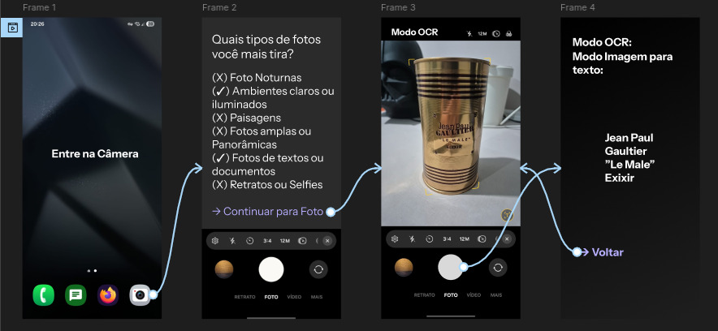

CHALLENGE SPRINT 2
CHALLENGE SPRINT 2
CHALLENGE SPRINT 2
CHALLENGE SPRINT 2
Nosso objetivo é melhorar a experiência do usuário, por isso, o módulo automático é uma funcionalidade que permite que a câmera ajuste automaticamente as configurações de acordo com o ambiente e as condições de iluminação. O OCR (Optical Character Recognition) é uma tecnologia que permite reconhecer e extrair texto de imagens, o que pode ser útil para digitalizar documentos ou traduzir textos em tempo real. Com essas funcionalidades, os usuários podem aproveitar ao máximo a qualidade da câmera dos Smartphones Jovi e ter uma experiência mais intuitiva e eficiente.
Com perguntas básicas de preferências ao usuário sem utilizar termos técnicos, será feita uma configuração automática da câmera, onde o usuário pode escolher entre as opções de preferências, como: "Gosta de tirar fotos em ambientes com pouca luz?" ou "Prefere fotos com fundo desfocado?". Com base nas respostas do usuário, a câmera ajustará automaticamente as configurações para otimizar a qualidade das fotos e vídeos, proporcionando uma experiência personalizada e satisfatória.
Já o modo ocr será ativado automaticamente quando a câmera detectar um documento ou texto em cena, permitindo que o usuário digitalize ou traduza o texto de forma rápida e fácil, sem a necessidade de configurar manualmente as opções de OCR. Dessa forma, os usuários podem aproveitar ao máximo as funcionalidades da câmera dos Smartphones Jovi, tornando a experiência mais intuitiva e eficiente.


